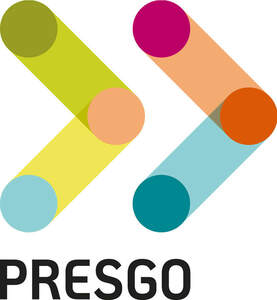

Trade Mark Journal No.2025/031 1 August 2025
UK00004238311 23 July 2025 (9,35,42)

- Class 9
- Software; software for collecting, hosting, managing, analysing and reporting on environmental, social and governance (ESG) data; software for collecting internal and external (including supply chain) environmental, social and governance (ESG) data through manual input or a suite of application programming interfaces linked to enterprise resource planning systems and business applications, and for aggregating environmental, social and governance (ESG) data; software for mapping environmental, social and governance (ESG) data to reporting frameworks; software for managing and monitoring corporate social responsibility (CSR) programs and environmental, social and governance (ESG) goals and performance; software for assessing and managing environmental, social and governance (ESG) risks; software for searching, organising, visualising and managing environmental, social and governance (ESG) data; software for mapping and identifying environmental, social and governance (ESG) risks and obtaining AI-driven recommendations on environmental, social and governance (ESG) risks, performance and disclosure; software for benchmarking performance with industry standards and best practices; software for providing customisable dashboards for corporate social responsibility (CSR) and environmental, social and governance (ESG) management; software for generating reports in relation to environmental, social and governance (ESG); software for integrating environmental, social and governance (ESG) and financial information into a coherent decision making framework and assessing the return on investment of specific programs; software for obtaining predictive and prescriptive AI-driven insights on environmental, social and governance (ESG) performance and optimisation; content management software; databases; data management software.
- Class 35
- Business management; business administration; business consultancy and advisory services; business management and organisation consultancy; business data analysis services; business management consultancy and advisory services; evaluations relating to commercial matters, in relation to the field of environmental, social and governance (ESG); environmental, social and governance (ESG) reporting for business purposes; providing of business information in the environmental, social and governance (ESG) field; business consulting in relation to the environmental, social and governance (ESG) field; business auditing; business auditing in relation to the environmental, social and governance (ESG) field ; compilation of information into computer databases; management and compilation of computerised databases; providing and updating environmental, social and governance (ESG) indexes.
- Class 42
- Software as a service (SaaS) featuring software for collecting, hosting, managing, analysing and reporting on environmental, social and governance (ESG) data; software as a service (SaaS) for collecting internal and external (including supply chain) environmental, social and governance (ESG) data through manual input or a suite of application programming interfaces linked to enterprise resource planning systems and business applications, and for aggregating environmental, social and governance (ESG) data; software as a service (SaaS) featuring software for mapping environmental, social and governance (ESG) data to reporting frameworks; software as a service (SaaS) featuring software for managing and monitoring corporate social responsibility (CSR) programs and environmental, social and governance (ESG) goals and performance; software as a service (SaaS) featuring software for assessing and managing environmental, social and governance (ESG) risks; software as a service (SaaS) featuring software for searching, organising, visualising and managing environmental, social and governance (ESG) data; software as a service (SaaS) featuring software for mapping and identifying environmental, social and governance (ESG) risks and obtaining AI-driven recommendations on environmental, social and governance (ESG) risks, performance and disclosure; software as a service (SaaS) featuring software for benchmarking environmental, social and governance (ESG) performance with industry standards and best practices; software as a service (SaaS) featuring software for providing customisable dashboard for corporate social responsibility (CSR) and environmental, social and governance (ESG) management; software as a service (SaaS) featuring software for generating reports in relation to environmental, social and governance (ESG); software as a service (SaaS) featuring software for integrating environmental, social and governance (ESG) and financial information into a coherent decision making framework and assessing the return on investment of specific programs; software as a service (SaaS) featuring software for obtaining predictive and prescriptive AI-driven insights on environmental, social and governance (ESG) performance and optimisation; design, development, implementation and updating of environmental, social and governance (ESG) software; environmental, social and governance (ESG) computer software consultancy; providing information on computer technology and programming; software as a service (SaaS) featuring software for content management; maintenance and updating of databases; software as a service (SaaS) featuring software for data management; maintenance and updating of computer software; technical support services relating to computer software and applications; installation of computer software; providing online information regarding computer software; computer technology advice provided to Internet users by means of a support hotline.
Azeus Systems Holdings Limited
Representative: Marks & Clerk LLP